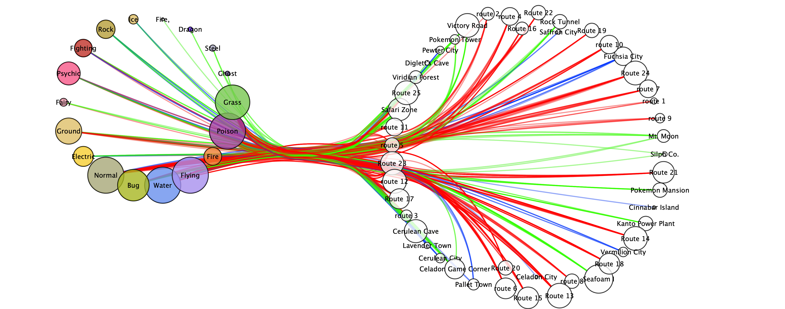
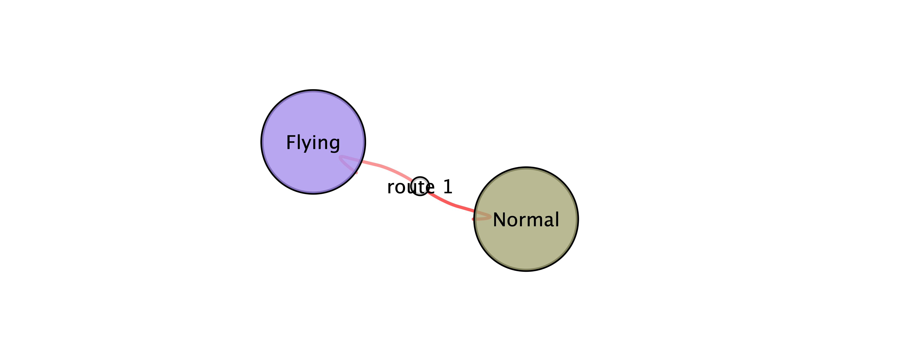
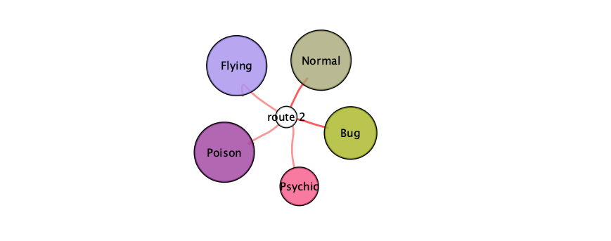

Anaylsis of Kanto
During our work with the Kanto region we aimed to look at the information we collected to see trends in data. The information we collected is all represent in the pictures below.
This image shows the relationship of all the data collected about Pokemon locations and their types. This information is interesting because in Pokemon the types of the Pokemon determine if the Pokemon will be strong versus a Pokemon of another type. Below we broke down each route into the types of Pokemon that can be found on that route.
The result of the information we found shows that there are particular types that are more abundant and others that are more rare. This is just one of many other regions that exsist in the Pokemon games. In the future, with all the other regions having the same analysis performed, the question is still asked if these trends will continue.
Route 1
Route 2
Route 3
Route 4

Route 5